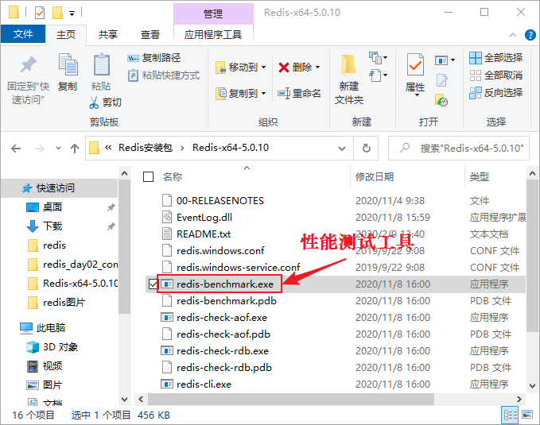

Redis Benchmark性能测试
为了解 Redis 在不同配置环境下的性能表现，Redis 提供了一种行性能测试工具 redis-benchmark（也称压力测试工具），它通过同时执行多组命令实现对 Redis 的性能测试。
性能测试的作用是让我们了解 Redis 服务器的性能优劣。在实际的业务场景中，性能测试是必不可少的。在业务系统上线之前，我们都需要清楚地了解 Redis 服务器的性能，从而避免发生某些意外情况，比如数据量过大会导致服务器宕机等。
在 Windows 系统下，其目录文件如图所示：
性能测试的作用是让我们了解 Redis 服务器的性能优劣。在实际的业务场景中，性能测试是必不可少的。在业务系统上线之前，我们都需要清楚地了解 Redis 服务器的性能，从而避免发生某些意外情况，比如数据量过大会导致服务器宕机等。
测试命令格式
执行测试命令，要在 Redis 的安装目录下执行，命令如下所示：redis-benchmark [option] [option value]其中 option 为可选参数， option value 为具体的参数值。 redis-benchmark 命令的可选参数如下所示：
| 参数选项 | 说明 |
|---|---|
| -h | 指定服务器主机名。 |
| -p | 指定服务器端口。 |
| -s | 指定服务器 socket。 |
| -c | 指定并发连接数。 |
| -n | 指定请求的具体数量。 |
| -d | 以字节的形式指定 SET/GET 值的数据大小。 |
| -k | 1 表示 keep alive；0 表示 reconnect，默认为 1。 |
| -r | SET/GET/INCR 使用随机 key, SADD 使用随机值。 |
| -P | Pipeline 请求 |
| -q | 强制退出 Redis，仅显示 query/sec 值。 |
| --csv | 以 CSV 格式输出。 |
| -l | 生成循环，永久执行测试。 |
| -t | 仅运行以逗号分隔的测试命令列表。 |
| -I(大写i) | 空闲模式，打开 N 个空闲连接并等待连接。 |
在 Windows 系统下，其目录文件如图所示：

图1：Redis Benchmark性能测试
图1：Redis Benchmark性能测试
执行测试命令
1) Windows环境
在 Windows 10 系统环境下，同时执行了 10000 个命令来检测 Redis 服务器的性能，示例如下：D:\Redis-x64-5.0.10>redis-benchmark.exe -n 10000 -q PING_INLINE: 21786.49 requests per second PING_BULK: 21231.42 requests per second #每秒执行22935.78个请求 SET: 22935.78 requests per second GET: 22573.36 requests per second INCR: 19011.41 requests per second LPUSH: 7473.84 requests per second RPUSH: 20618.56 requests per second LPOP: 17793.60 requests per second RPOP: 21367.52 requests per second SADD: 15847.86 requests per second HSET: 21551.72 requests per second SPOP: 19531.25 requests per second LPUSH (needed to benchmark LRANGE): 18348.62 requests per second LRANGE_100 (first 100 elements): 6835.27 requests per second LRANGE_300 (first 300 elements): 4535.15 requests per second LRANGE_500 (first 450 elements): 3913.89 requests per second LRANGE_600 (first 600 elements): 3177.63 requests per second MSET (10 keys): 15128.59 requests per second注意：若是 Linux 系统，其每秒钟执行的请求数量是 Windows 系统的好几倍。
2) Linux环境
Linux 环境下，Redis 的性能测试结果，如下所示：$ redis-benchmark -n 10000 -q PING_INLINE: 141043.72 requests per second PING_BULK: 142857.14 requests per second #服务器每秒执行的请求数量 SET: 141442.72 requests per second GET: 145348.83 requests per second INCR: 137362.64 requests per second LPUSH: 145348.83 requests per second LPOP: 146198.83 requests per second SADD: 146198.83 requests per second SPOP: 149253.73 requests per second LPUSH (needed to benchmark LRANGE): 148588.42 requests per second LRANGE_100 (first 100 elements): 58411.21 requests per second LRANGE_300 (first 300 elements): 21195.42 requests per second LRANGE_500 (first 450 elements): 14539.11 requests per second LRANGE_600 (first 600 elements): 10504.20 requests per second MSET (10 keys): 93283.58 requests per second
3) 执行指定的测试命令
带参数的命令，使用示例如下：D:\Redis-x64-5.0.10>redis-benchmark.exe -h 127.0.0.1 -p 6379 -n 10000 -t set,get,lpush -q SET: 17064.85 requests per second GET: 16051.36 requests per second LPUSH: 14224.75 requests per second
关注公众号「站长严长生」，在手机上阅读所有教程，随时随地都能学习。内含一款搜索神器，免费下载全网书籍和视频。

微信扫码关注公众号